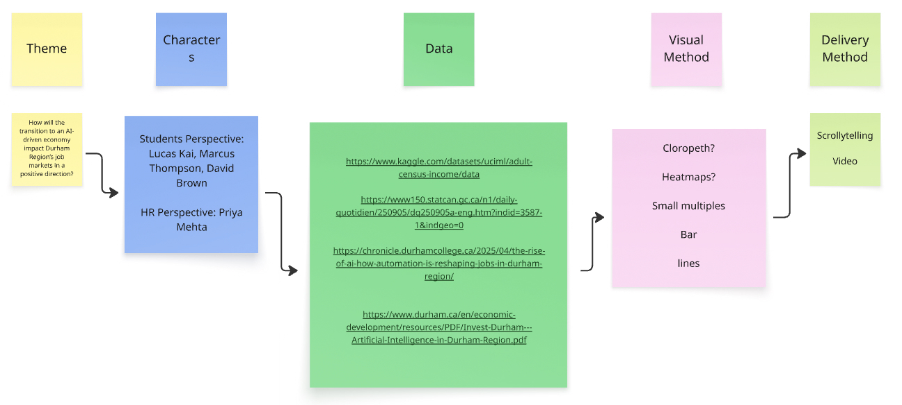
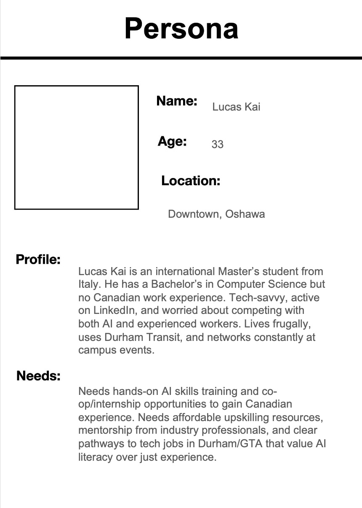

This project created four research‑based personas that became the narrative spine of an interactive scrollytelling story about how AI is reshaping Durham Region’s job market.
Lucas, Marcus, David and Priya each anchor a chapter of the experience, turning unemployment statistics and automation data into concrete decisions at a campus job fair — who studies more, who reskills, who hires, and who risks being left behind.
From brief to personas
01
Discovery & ideation

Research synthesis on Miro: connecting theme, characters, data sources, visual methods and delivery format into one flow.
We started by mapping the Durham talent ecosystem—students, graduates, workers in transition, and employers.
On Miro, we clustered recurring themes such as AI anxiety, employability gaps, experience mismatches and hiring pressure,
and tied each of them to potential data sources and visual forms.
This board became the bridge between research and concept: it’s where the future story, the data pipeline and the scrollytelling format first met.
↓
02
Turning insights into characters

Research‑grade persona: a one‑page brief that condenses interviews and labour‑market data into a believable character the whole team can design around.
From the clusters on Miro, four anchor personas emerged: Lucas, Marcus, David and Priya.
Each card translates abstract patterns into a believable human: age, backstory, goals, and the specific ways
AI disruption shows up in their lives.
These personas were designed as cast members for the story, not just documentation.
They later became the “voices” that guide the reader through the data in the interactive piece.
↓
03
Designing the output
With the cast defined, we scripted an interactive story: one job fair, four generations, and a series of scenes where
each persona “meets” a different dataset—unemployment rates, automation risk, emerging AI careers and new skill demands.
The final experience doesn’t just show charts; it lets the audience follow how Lucas, Marcus, David and Priya
read the same numbers and reach very different decisions about study, reskilling and hiring. One dataset, four paths.
The four personas
Lucas · Marcus · David · Priya
Lucas Kai, 33 International Master’s Student
Downtown Oshawa
Computer Science background, no Canadian work experience, follows AI trends closely.
Needs hands‑on AI training, co‑op or internships, and mentorship to enter the GTA tech market.
Marcus Thompson, 23 Recent Business Graduate
Oshawa, renting with roommates
Finished Business Management, but entry‑level corporate roles he expected never materialized.
Needs practical AI‑skills training and guidance to position himself as someone who uses AI instead of competing with it.
David Brown, 46 Mid‑career Tech Professional
Durham Region
Former tech specialist recently laid off after major technology changes at his company.
Needs fast reskilling and connections to local employers so he can support a family of four without restarting from zero.
Priya Mehta, 24 Corporate Recruiter
Durham–GTA corridor
HR professional at a major bank, struggling to find candidates who combine soft skills with AI literacy.
Leads partnerships with local universities and needs a reliable pipeline of “AI‑ready” talent with strong portfolios.
The power of persona‑driven design
By grounding the narrative in real research and lived experience, personas stop being documents. They become guides
that shape every choice: which data point to show, which question to ask, which emotion to honor.
In roadmap discussions, the team no longer asked “what does a user need?” but
“what does Lucas need? What’s keeping Marcus up at night? How does David stay relevant?”
That shift—from abstract to concrete, from demographic to human—is where design turns insight into empathy.